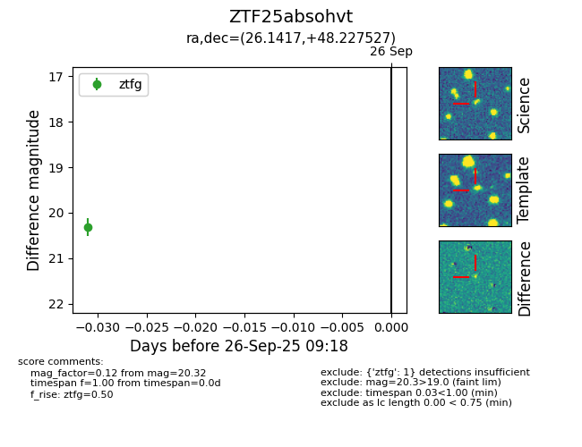

FINK: ZTF25absohvt
Lasair: ZTF25absohvt
ALeRCE: ZTF25absohvt
ZTF25absohvt (ztf,fink)
equatorial (ra, dec) = (26.1417,+48.22753)
galactic (l, b) = (131.9960,-13.70698)

last ztfg=20.32
1 ztfg detections